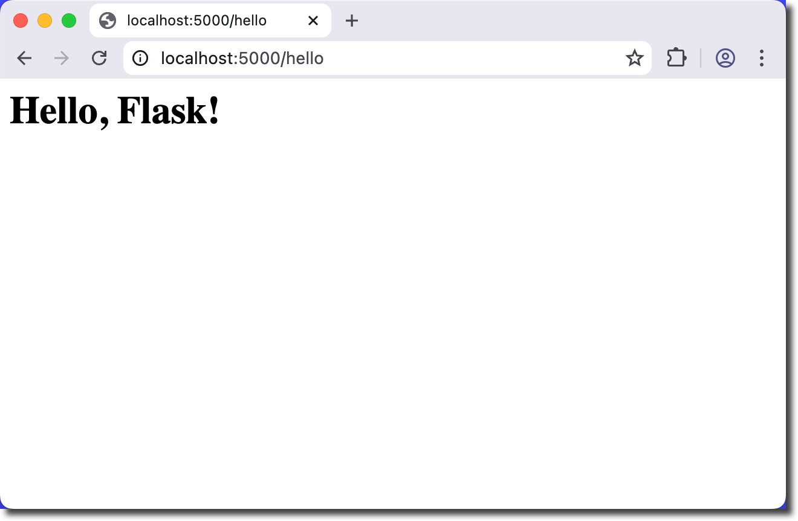
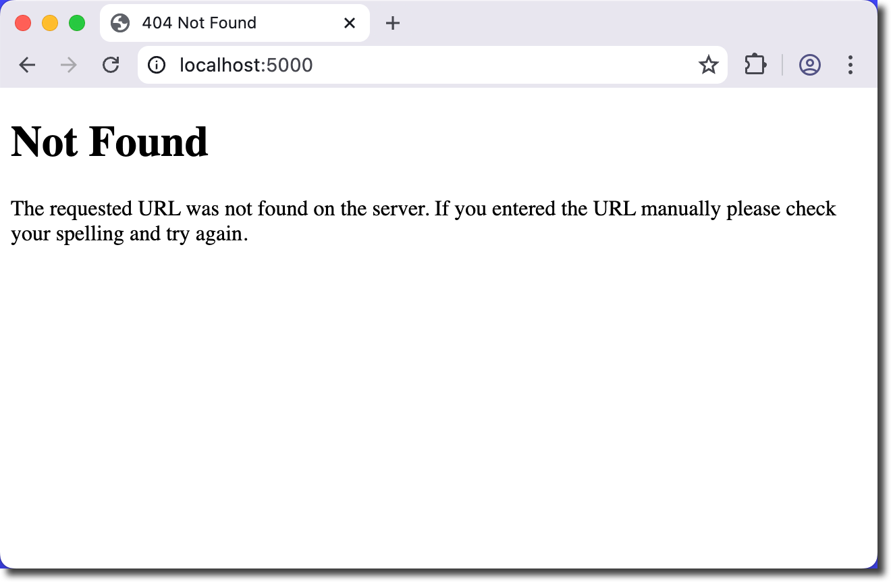
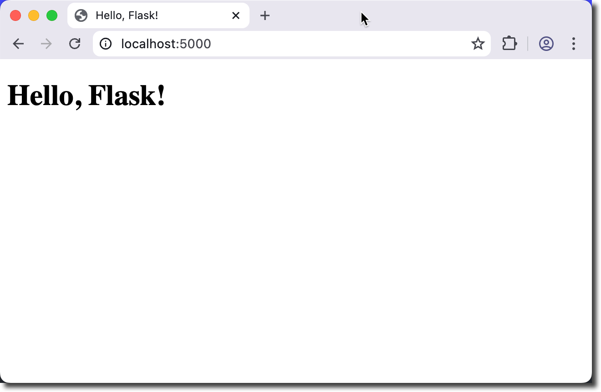
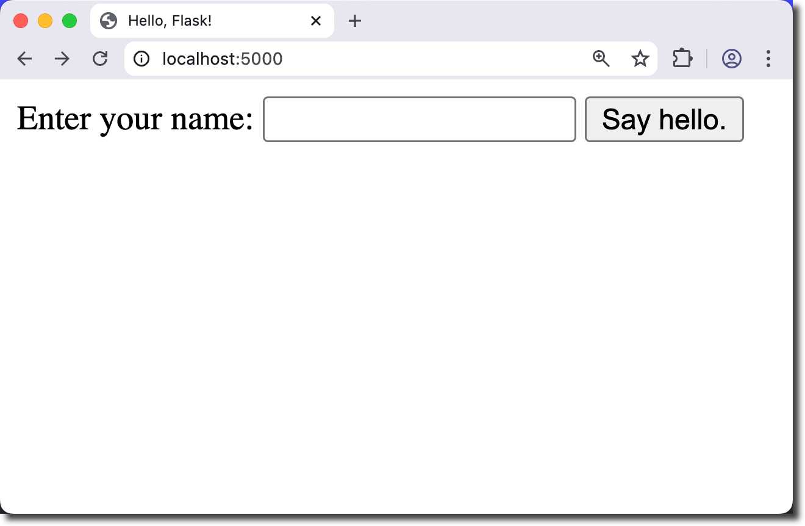
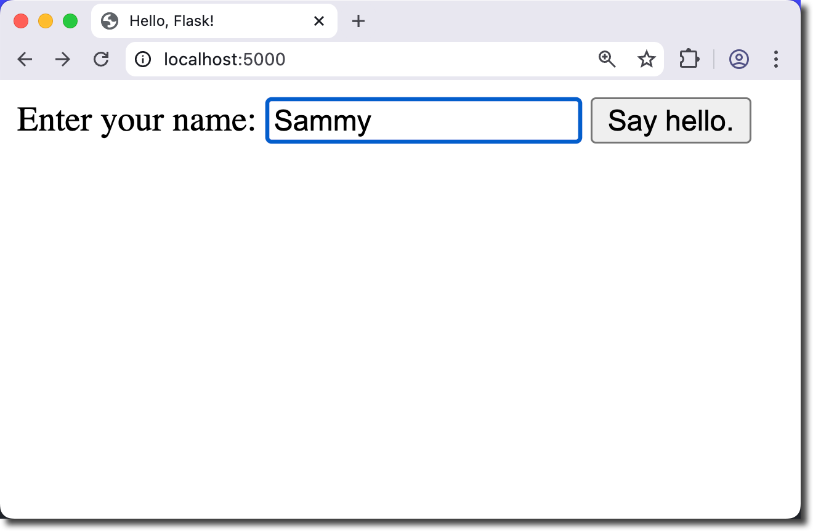
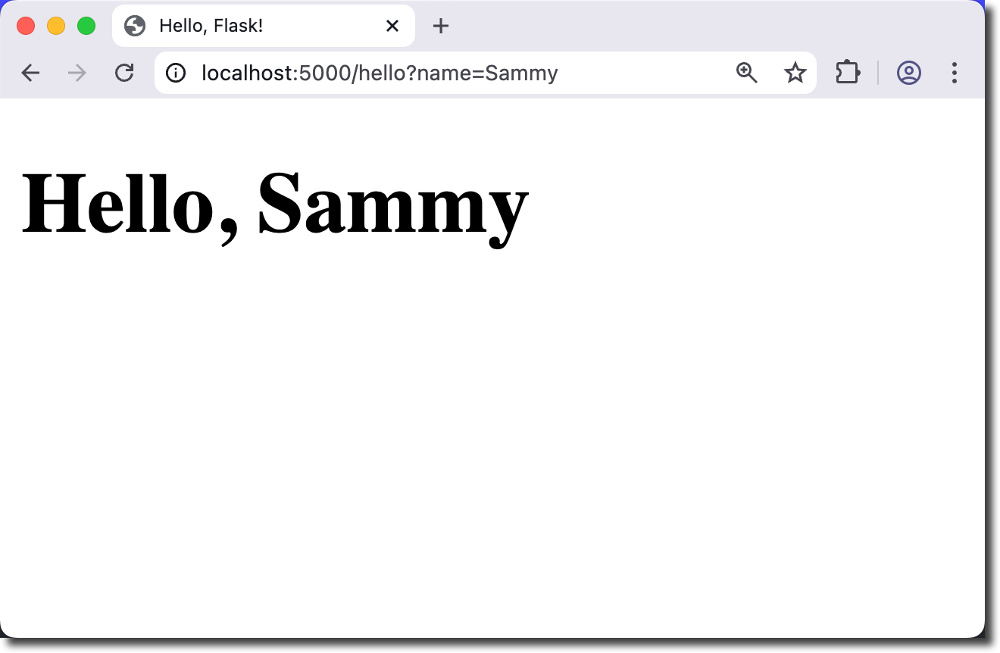

Objectives
Build a Hello, World web application using Flask.
Tools Needed
You will need a code editor, a web browser, Python 3, and Flask.
Flask is a lightweight WSGI web application framework. It is designed to make getting started quick and easy, with the ability to scale up to complex applications. From the Flask User Guide.
Create a working folder named hello-flask and open it in your editor.
Create two files in the directory:
We will list required packages in requirements.txt and build our application in app.py.
This project only requires flask. Add the following line to requirements.txt:
Flask
Open app.py and enter the following:
from flask import Flask
app = Flask(__name__)
@app.route("/hello")
def hello_world():
return "<h1>Hello, Flask!</h1>"
What does this code do?
Notice that the @decorator is used in flask to indicate a specific route (/hello). The function immediately following the route will be triggered.
Open the terminal in your editor (or manually in your project directory).
Make sure you have flask installed.
pip install -r requirements.txt
Start the flask server by entering flask run in the
terminal.
The server status will display:
hello-flask % flask run
* Debug mode: off
WARNING: This is a development server. Do not use it in a production deployment. Use a production WSGI server instead.
* Running on http://127.0.0.1:5000
Press CTRL+C to quit
You will be able to see what is going on with the server from this log.
Open your browser to
http://localhost:5000/hello.
This is your local machine (e.g. 127.0.0.1) using port 5000 to open /hello.
You should see your flask application running in the browser.

You will see a log entry in the terminal as well.
127.0.0.1 - - [14/Nov/2025 12:10:42] "GET /hello HTTP/1.1" 200 -
Did you get an error? If you tried to open the URL without /hello you will get the error page.

You also see the 404 error in the log:
127.0.0.1 - - [14/Nov/2025 12:14:06] "GET / HTTP/1.1" 404 -
There are several http codes that you might want to be familiar with.
| Code | Meaning | Description |
|---|---|---|
| 200 | OK | Request succeeded. |
| 201 | Created | New resource successfully created. |
| 204 | No Content | Request succeeded, no response body. |
| 301 | Moved Permanently | Resource has been permanently moved to a new URL. |
| 302 | Found | Temporary redirect to another URL. |
| 304 | Not Modified | Cached version is still valid; no new data. |
| 400 | Bad Request | Request is malformed or invalid. |
| 401 | Unauthorized | Authentication required or failed. |
| 403 | Forbidden | Request understood but not allowed. |
| 404 | Not Found | Resource not found. |
| 405 | Method Not Allowed | HTTP method not supported by the resource. |
| 409 | Conflict | Request conflicts with current state of the server. |
| 429 | Too Many Requests | Rate limit exceeded. |
| 500 | Internal Server Error | Generic server-side failure. |
| 502 | Bad Gateway | Upstream server returned an invalid response. |
| 503 | Service Unavailable | Server temporarily unable to handle the request. |
| 504 | Gateway Timeout | Upstream server took too long to respond. |
There is no route in our application for the root directory, “/”. Let’s create one.
Stop your flask server by typing CTRL+C in the terminal.
Create a “homepage” at the route “/” with a form to enter a name. Then the page will redirect to “/hello”.
We will flasks built-in template engine to show the html file.
Import render_template and then use it to return index.html.
Edit app.py
from flask import Flask, render_template
app = Flask(__name__)
@app.route("/")
def index():
return render_template("index.html")
@app.route("/hello")
def hello_world():
return "<h1>Hello, Flask!</h1>"
We have added:
Flask templates let you separate HTML from Python logic by using
Jinja2 files in a templates/ folder, where you pass
data from your routes into template files rendered with
render_template().
Create the templates/ directory.
mkdir templates
The project folder should look like this now:
.hello-flask
├── app.py
├── requirements.txt
└── templates
Inside the templates folder, create a basic html page named index.html with a title and an h1 that contain “Hello, Flask!”.
Use the flask run command and open your browser to
http://localhost:5000
You should see index.html.

We now have 2 working routes that display similar output.
We will change index.html to be a form that asks you to enter your name.
Then we will route to “/hello” and display a custom message.
Stop your flask server by typing CTRL+C in your terminal.
Update index.html
Remove the h1 and enter this simple form into the body tag.
<form action="/hello" method="GET">
Enter your name:
<input name="name" type="text" autofocus autocomplete="off">
<button type="Submit">Say hello.</button>
</form>
action="/hello": Send a GET request to the
/hello route<input name="name" type="text" autofocus autocomplete="off">:
Accept text input. This input has name of “name”.<button type="Submit">Say hello.</button>:
Submit button to send the GET request.A GET request retrieves data from the server using URL parameters and does not change server state, while a POST request sends data in the request body to create or modify resources on the server.
GET requests send the data in the URL - it’s visible to the user. For example:
http://localhost:5000/hello/?name=Sammy
Restart flask by pressing the up arrow or typing
flask run into the terminal.
The Say hello button will direct the browser to the correct route, but it isn’t using the name yet. You will still see the h1 from the route in app.py.

Update the “/hello” route to return a webpage named hello.html.
@app.route("/hello")
def hello_world():
return render_template("hello.html")
Create a file named hello.html in the templates directory. You can use the basic html page as a guide.
Add a title and an h1 that contain “Hello, Flask!”.
Restart flask by typing the up arrow or flask run in
the terminal. Refresh the browser page.
The project directory looks like this currently:
.hello-flask
├── app.py
├── requirements.txt
└── templates
├── hello.html
└── index.html
Fix any errors that you may find before continuing.
Why aren’t we seeing the name we entered in the hello file?
We are ready to GET the name value passed from
index.html. We will use python to assign the
name value to a variable and pass that to
hello.html. We display that value in html with
{{ name }}.
┌──────────────┐ GET name ┌───────────────────────┐
│ index.html │ ----------------------> │ Flask Route │
└──────────────┘ │ name = request.args │
│ render_template() │
└─────────┬─────────────┘
│ passes name
▼
┌───────────────────────┐
│ hello.html │
│ displays {{ name }} │
└───────────────────────┘
We must sanitize all user-provided data. Values rendered in the output must be escaped to protect from injection attacks.
Stop your flask server if it is running by typing CTRL+C in the terminal.
Add an import for escape and request in app.py
from flask import Flask, render_template, request
from markupsafe import escape
Update the hello() function to:
Update to this:
@app.route("/hello")
def hello():
if request.args.get('name'):
name = request.args.get('name')
else:
name = "World"
return render_template( "hello.html", name=escape(name) )
Now python will send the name typed into the form on index.html to a variable available to hello.html. This will display in the URL.
http://localhost:5000/hello/?name=Sammy
Update hello.html to use the Jinja variable
{{ name }}.
Change the h1 as follows:
<h1>Hello, {{ name }}</h1>
Save the file. Start flask by typing the up arrow or
flask run in the terminal.
Test your code several times with both a blank value (to test for World) and various names.


Here is the complete app.py code:
from flask import Flask, render_template, request
from markupsafe import escape
app = Flask(__name__)
@app.route("/")
def index():
return render_template("index.html")
@app.route("/hello")
def hello():
if request.args.get('name'):
name = request.args.get('name')
else:
name = "World"
return render_template( "hello.html", name=escape(name) )
🎉 Congratulations, you have built a flask app. 🎉
/static/ files for CSS and imagesPOST instead of GET to pass
data to the serversqlite3